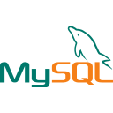
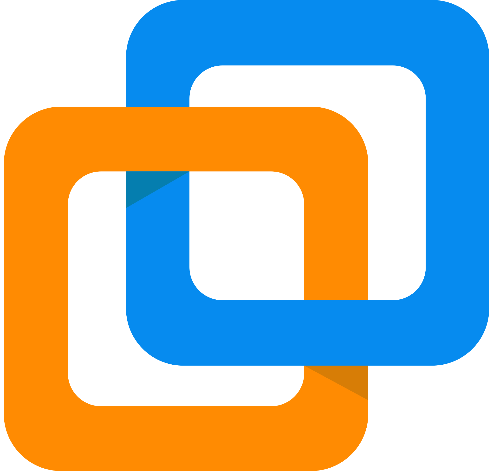
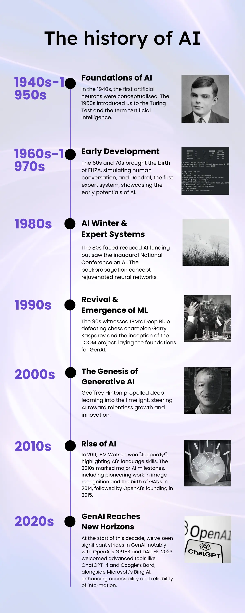
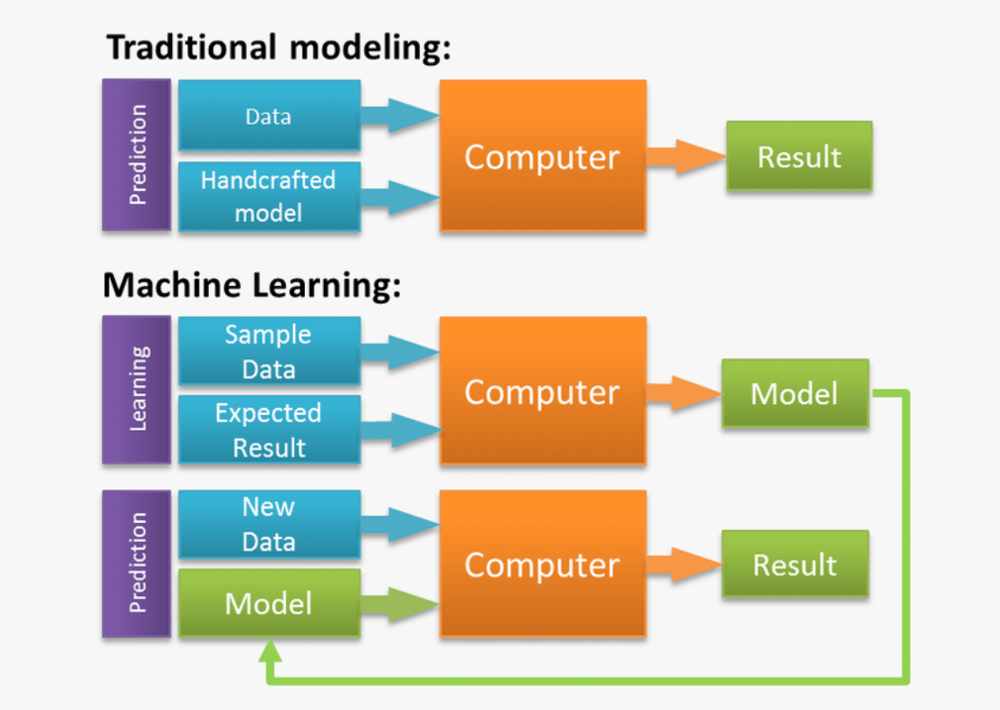

Kikouedi Dandou
Messi
Bienvenue sur mon portfolio

Le BTS SIO
Le BTS Services Informatiques aux Organisations est un diplôme d'État de niveau Bac+2. Il forme des professionnels capables de répondre aux besoins informatiques des entreprises, que ce soit en matière d'infrastructure réseau ou de développement logiciel.
Mon Parcours Scolaire
CSNDR, Pointe-Noire, République du Congo
Bac Général
Options Mathématiques, Physique-Chimie et SVT.
Université d'Orléans, Orléans, France
2e année de Licence Informatique
Lycée Charles de Foucauld, Paris, France
BTS SIO
Option Solutions logicielles et applications métiers.
Compétences Développement
HTML
CSS
JavaScript

Laravel

PHP

MySQL
Java
Python
Mes Outils
VS Code

VMware
GitHub

FileZilla

Linux

IntelliJ
Trello
Mes Réalisations
Application de facturation — M2L
Application de facturation (Bootstrap, PDO, MySQL) — saisie mensuelle, gestion des ligues, prestations et factures.
Gestion des employés — M2L (Java)
Application Java : conversion CLI → multi-utilisateurs, 3 niveaux d'habilitation, persistance via BD.
Veille Technologique
Qu'est ce qu'une veille technologique ?
La veille technologique est un processus de surveillance des évolutions et des innovations dans un domaine précis. Elle permet de recueillir, analyser et exploiter des informations sur les nouvelles technologies afin d’anticiper les changements, innover, rester compétitif et saisir des opportunités.
Le sujet de ma veille technologique
Le thème que j’ai choisi pour ma veille est : « L'évolution du Machine Learning : des algorithmes
prédictifs à l'intelligence artificielle générative ».
Ce sujet m’intéresse particulièrement car je souhaite orienter ma poursuite d’études vers les métiers de la Data et de l’Intelligence Artificielle. En tant qu'étudiant en développement (SLAM), il est crucial pour moi de comprendre comment nous passons d'une programmation classique, basée sur des règles strictes, à une approche où la machine apprend par elle-même grâce aux données.
Evolution de l'IA

Machine learning vs Programmation traditionnelle

Les articles en lien avec ma veille
- Nous devons vérifier la présence de biais raciaux dans nos modèles de machine learning
- Machine Learning for Scientific Discovery: L'ENS ouvre un cours d'IA pour tous ses élèves
- L'intelligence artificielle dans l'assurance : quelles typologies de nouveaux risques, notamment juridiques, vont émerger ?
- L'IA générative est une dystopie antidémocratique
- « Vous allez devenir dépendants à l’utiliser tout le temps » : comment l’intelligence artificielle impacte l’école dans les Alpes-Maritimes
- L'IA générative comme produit de la société de consommation